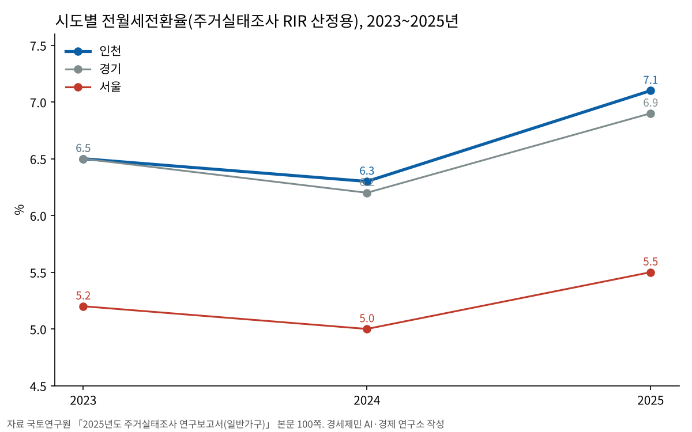
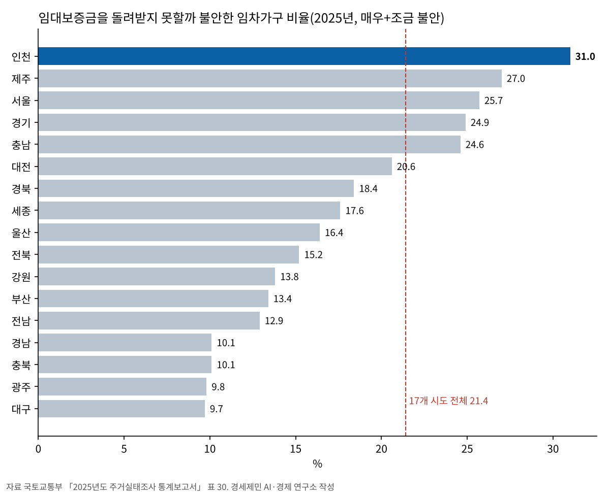
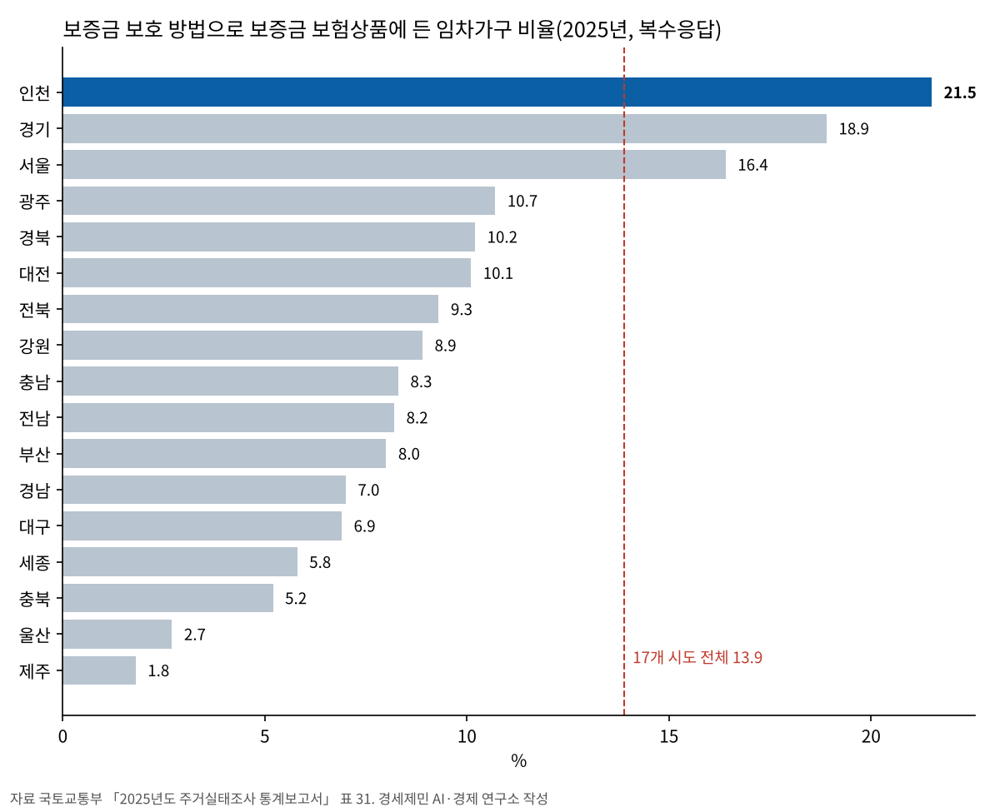

[부동산 브리핑] 인천 세입자 보증금 불안 31.0%, 17개 시도 중 1위
2025년도 주거실태조사 시도별 표 재정렬
보증금 보험 가입도 인천 21.5%로 1위
15년 만의 최저주거기준 개정 논의
AI경제저널=김갑봉 기자 | 국토교통부는 2026년 11월 17일 「2025년도 주거실태조사」 결과를 발표했다. 6만 1천 가구를 표본으로 삼아 5만 5천 가구는 대면, 6천 가구는 비대면으로 조사했다.
보도자료에는 나라 전체 숫자만 실렸다. 시도별 숫자는 국토교통 통계누리에 올린 통계보고서와 국토연구원 연구보고서에 있다. 이 브리핑은 통계보고서의 시도별 표를 다시 정렬해 인천 세입자의 자리를 짚는다.
순위와 차이는 표의 두 응답(매우 불안함, 조금 불안함)을 더해 셈했다(AI경제저널 계산). 표본조사라 시도별 숫자에는 표본오차가 있다.
주거비 부담 17.0%, 1년 새 상승
나라 전체 자가보유율은 62.0%로 2024년 61.4%보다 높아졌다. 자가가구의 연소득 대비 주택가격 비율(PIR, 중위수)은 6.3배로 같았다. 1인당 주거면적은 36.0㎡에서 38.2㎡로 넓어졌고, 최저주거기준 미달가구는 3.8%에서 3.6%로 줄었다.
빌려 사는 가구의 사정은 반대로 움직였다. 임차가구의 월소득 대비 임대료 비율(RIR)은 중위수 17.0%다. 보도자료가 밝힌 2024년 15.8%는 연구보고서 표 Ⅲ-50의 기존 방식(나라 전체에 한 전환율을 쓰는 방식) 숫자다. 시도별 전환율을 쓰는 개선 방식으로 보아도 15.7%에서 17.0%로 올랐다.
국토교통부는 보도자료 첫머리에 「주거환경은 개선, 주거비 부담은 증가」라고 적었다.
인천 임차가구 35.3%, 임대료 비율 17.0%
인천 가구 가운데 남의 집을 빌려 사는 가구는 35.3%다. 17개 시도 전체 37.3%, 서울 53.1%, 경기 39.3%보다 낮다. 인천 자가가구의 PIR은 2022년 7.7배에서 2023년 6.1배로 내려갔다가 2024년 6.6배로 올랐고, 2025년 다시 6.1배다.
인천 임차가구의 RIR(개선 방식, 중위수)은 17.0%로 2024년 15.8%보다 1.2%포인트 높다. 기존 방식으로는 16.3%다. 개선 방식이 더 높게 나오는 까닭은 인천의 전월세전환율이 기존 방식에 쓰는 나라 전체 이율(2025년 6.5%)보다 높아서다.
전월세전환율은 보증금을 월세로 바꿀 때 쓰는 연 이율이다. 연구보고서 본문(표 Ⅲ-50 아래 시도별 표)을 보면 인천은 2023년 6.5%, 2024년 6.3%에서 2025년 7.1%로 올랐다. 같은 해 서울은 5.5%, 경기는 6.9%다. 인천에서는 같은 보증금을 월세로 돌릴 때 서울보다 1.6%포인트 높은 이율이 붙는다.

보증금을 잃을까 불안한 인천 가구 31.0%
통계보고서 표 30은 보증금이 있는 임차가구에 「임대보증금을 돌려받지 못할 수도 있다는 불안감」을 물었다. 인천에서는 6.5%가 매우 불안하다고, 24.5%가 조금 불안하다고 답했다.
둘을 더한 31.0%는 17개 시도 가운데 가장 높다. 제주 27.0%, 서울 25.7%, 경기 24.9%, 충남 24.6%가 뒤를 잇고, 17개 시도 전체는 21.4%다.
나라 전체 표를 점유형태로 나누면 전세가구의 31.9%가, 보증금 있는 월세가구의 13.4%가 불안하다고 답했다. 주택유형으로는 연립주택 37.8%, 다세대주택 25.8%, 아파트 23.7%, 단독주택 17.3%다.
다른 불안도 인천이 높은 쪽에 선다. 재계약 때 임대료가 오르거나 전세가 월세로 바뀔까 불안한 인천 가구는 28.6%로 서울 32.1%, 경기 30.5%에 이어 셋째다.
계약기간이 끝나고 집주인이 재계약을 거부할까 불안한 인천 가구는 19.9%다. 계약기간 중 나가 달라는 요구를 받을까 불안한 가구는 18.5%다. 17개 시도 전체는 각각 18.2%, 16.6%다.
인천의 불안은 실제 사고 숫자와 겹친다. 박명화·유선종(2025)은 주택도시보증공사의 전세보증금 반환보증 사고 건수를 2023년 가구 수로 나눠 지역별 사고 비율을 셌다. 2024년 3~5월 자료를 연으로 환산한 값이다.
그 결과 인천은 0.51%로 서울(0.11%)의 4.6배, 경기(0.12%)의 4.3배였다. 같은 연구는 2020~2022년 인천에서 발급된 반환보증 5만5218건을 이항로짓 모형으로 분석했다.
전세금과 부채비율이 클수록 채무불이행이 늘었고, 임대인이 다주택자이면 채무불이행이 늘었다. 임대인 한 명의 보증 건수가 3건 이상이면 채무불이행률이 9.17%로 1건(1.21%)의 7배를 넘었다.

보증금 보험 가입 21.5%, 이것도 1위
통계보고서 표 31은 임차가구가 보증금을 지키려고 쓴 방법을 묻는다(복수응답). 인천은 확정일자 발급 70.9%, 전세권 설정 27.7%, 보증금 보험상품 가입 21.5%다.
보험 가입 21.5%는 17개 시도 가운데 가장 높고 경기 18.9%, 서울 16.4%보다 높다. 17개 시도 전체는 13.9%다. 아무 방법도 쓰지 않은 인천 가구는 23.6%로 전체(23.5%)와 비슷하다.
불안이 가장 큰 곳에서 보험에 드는 가구도 가장 많다. 불안과 보험 가입은 모두 전세가구에서 월세가구보다 훨씬 높다(불안 31.9% 대 13.4%, 보험 24.7% 대 5.8%). 표만으로는 인천 임차가구 안의 전세 비중이 두 숫자를 함께 끌어올렸는지, 불안이 보험 가입으로 이어졌는지 가를 수 없다.
인천의 전세 보증금은 서울보다 작다. 표 15를 보면 인천 전세가구의 41.2%가 보증금 1억 원 이하다(5천만 원 이하 12.2%, 5천만~1억 원 29.0%). 17개 시도 전체는 32.0%, 서울은 19.3%다. 인천의 보증금 규모는 서울보다 작은데, 보증금 불안 비율은 서울보다 5.3%포인트 높다.
표 10을 보면 인천 임차가구 가운데 공공임대주택에 사는 가구는 17.0%다. 17개 시도 전체 14.5%, 서울 11.3%, 경기 17.4%다. 나머지 83.0%는 민간임대주택에 산다.
국토교통부는 11월 26일 2025년 한 해 신고된 임대차 거래를 기획조사해 전세사기 의심 거래 88건을 적발하고 22명을 경찰에 수사의뢰했다고 밝혔다. 인천시는 11월 6일 LH주거복지정보, 인천광역주거복지센터와 생애주기별 주거상담과 주거복지 서비스를 잇는 업무협약을 맺었다.

최저주거기준, 2011년 뒤 15년 만의 개정 논의
국토교통부는 11월 19일 보도자료에서 11월 20일 서울에서 「주거복지정책 토론회」를 연다고 밝혔다. 토론회는 9월 21일 발표한 「주거안정플랜」의 후속 조치다.
1부 주제는 최저주거기준 개선방안으로, 영남대 서지은 교수가 발제를 맡았다. 국토교통부는 최소주거면적뿐만 아니라 필수설비, 구조·성능, 환경 기준 전반의 개선 방안을 논의할 계획이라고 밝혔다. 2부는 보편형 공공임대의 입주기준·임대료 산정방식·거주기간을 다룬다.
최저주거기준은 2011년 뒤로 바뀌지 않았다. 2025년 조사에서 나라 전체 미달가구 비중은 3.6%다. 통계보고서는 미달 비중을 시도별로 싣지 않았다.
김이탁 국토교통부 1차관은 같은 보도자료에서 「국민의 주거수준을 실질적으로 높일 수 있는 최저주거기준의 개선이 중요하다」고 강조했다. 11월 19일 보도자료에는 개정안의 내용과 시행 시기가 없다.
맺음
인천은 집을 빌려 사는 가구 비중이 수도권에서 가장 낮은데, 보증금을 잃을까 불안한 가구 비중은 17개 시도에서 가장 높다. 보증금은 서울보다 작고 전월세전환율은 서울보다 높으며, 보험에 드는 가구는 가장 많다.
국토교통부가 꺼낸 최저주거기준 개정 의제는 면적·설비·구조·환경이고, 11월 19일 보도자료는 개정안 공개 일정을 적지 않았다.
참고문헌
- 박명화·유선종, 「전세금반환보증 채무불이행에 미치는 요인에 대한 연구: 인천광역시를 중심으로」, 『국토연구』 제125권, 국토연구원, 2025년 6월, 3~17쪽, http://dx.doi.org/10.15793/kspr.2025.125..001
- 국토연구원, 「2025년도 주거실태조사 연구보고서(일반가구)」, 국토교통부, 2026년(6월 제출, 국토교통 통계누리 게시), https://stat.molit.go.kr/portal/cate/statView.do?hRsId=327
- 국토교통부, 「2025년도 주거실태조사 통계보고서」, 2026년(6월 제출, 국토교통 통계누리 게시), https://stat.molit.go.kr/portal/cate/statView.do?hRsId=327
- 국토교통부 주택정책과·주거복지정책과, 「2025년도 주거실태조사 결과」, 2026년 11월 18일 조간(11월 17일 배포), https://www.molit.go.kr/USR/NEWS/m_71/dtl.jsp?id=95092607
- 국토교통부 주거복지정책과, 「최저주거기준 높이고 공공임대 선택 넓힌다」, 2026년 11월 20일 조간(11월 19일 배포), https://www.molit.go.kr/USR/NEWS/m_71/dtl.jsp?id=95092619
- 국토교통부 부동산소비자보호기획단, 「’26년 전세사기 기획조사 실시 결과 전세사기 의심 88건 적발… 22명 수사의뢰」, 2026년 11월 27일 조간(11월 26일 배포), https://www.molit.go.kr/USR/NEWS/m_71/dtl.jsp?id=95092651
- 인천광역시 주택정책과, 「청년부터 고령층까지…인천시, 생애주기 맞춤형 주거 안전망 펼친다」, 2026년 11월 6일, https://www.incheon.go.kr/IC010205/view?repSeq=DOM_0000000015918564
[사진 출처]
- [사진 1] 인천광역시, 포토시정 「생애주기별 주거상담 연계지원 업무 협약식」, 2026년 11월 6일, https://www.incheon.go.kr/intv/TV010201 (인천시 제공)
※ 이 기사는 인공지능기자 위민아이(Wemin_AI)와 협력해 작성했습니다.
관련기사
- [부동산 브리핑] 노후계획도시 주민대표단 최대 25석과 세입자의 자리
- [부동산 브리핑] 검단의 새집 727호는 비어 있는데 전셋값은 오른다
- [도시계획·부동산] 인천 아홉 구를 같은 16주로 다시 셌다, 세입자 부담은 영종·계양·연수가 컸다
- [도시계획·부동산] 인천 재개발 14곳 원문을 열었다, 9곳이 에너지 성능으로 용적률을 샀다
저작권자 © AI경제저널 무단전재 및 재배포, AI학습 및 활용 금지